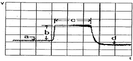

자동차정비기능장 (2015-07-19 기출문제)
1과목: 임의구분
1. 고체표면에서 상대운동을 할 때 충분한 유막이 형성되는 이상적인 마찰은?
- 혼성마찰
- 경계마찰
- 유체마찰
- 고체마찰
(정답률: 76%)

2. 다음 그림은 아이들(idle)상태에서 급가속 후 나타난 MAP센서 출력파형이다. 각 구간별 설명으로 틀린 것은?

- a:아이들 상태의 출력을 보여준다.
- b:급가속시 스로틀밸브가 빠르게 열리고 있다.
- c:스로틀 밸브가 전개(WOT)부근에 있다.
- d:급가속에 의한 흡입공기량 변화로 진공도가 높아지기 때문에 전압이 낮아짐을 보여준다.
(정답률: 84%)
3. 가솔린 기관의 이론열효율에 대한 압축비와 비열비의 관계로 옳은 것은?
- 압축비가 낮아지면 효율은 좋아진다.
- 비열비가 낮아지면 효율은 좋아진다.
- 압축비와 비열비를 작게하면 열효율이 좋아진다.
- 압축비와 비열비를 크게하면 열효율이 좋아진다.
(정답률: 68%)
4. 공연비 피드백제어에 대한 내용으로 틀린 것은?
- 삼원촉매장치의 정화율을 높여준다.
- 입력센서의 정보가 연료분사에 영향을 주지 못한다.
- 인젝터의 분사시간을 제어한다.
- 산소센서 고장시에는 피드백제어를 하지 않는다.
(정답률: 79%)
5. 라디에이터 압력식 캡의 진공밸브가 열리는 시점으로 맞는 것은?
- 라디에이터 내의 압력이 대기압보다 높을 때
- 라디에이터 내의 압력이 대기압보다 낮을 때
- 라디에이터 내의 압력이 규정치보다 높을 때
- 보조탱크 내의 압력이 규정치보다 낮을 때
(정답률: 68%)
6. 자동차용 LPG연료가 갖추어야 할 조건으로 틀린 것은?
- 적당한 증기압을 가져야 한다.
- 불포화(올레핀계)탄화수소를 함유하지 말아야 한다.
- 가급적 불순물이 함유되지 말아야 한다.
- 프로필렌, 부틸렌 등의 함유가 충분히 많아야 한다.
(정답률: 77%)
7. 직렬형 6실린더 기관의 점화순서가 1-5-3-6-2-4에서 1번 실린더가 폭발행정 ATDC30ㆍ에 위치할 때 2번 실린더의 행정과 피스톤위치는?
- 배기행정, BTDC30ㆍ
- 배기행정, BTDC60ㆍ
- 배기행정, BTDC90ㆍ
- 배기행정, BTDC180ㆍ
(정답률: 63%)
8. 자동차에 사용되는 각종 전기, 전자, 소자 구품에 대한 내용으로 틀린 것은?
- 인젝터는 솔레노이드밸브가 사용되며 통전되는 시간에 따라 분사량이 결정된다.
- 릴레이는 기본 전원을 연결했을 경우 주회로에 연결되기 때문에 스위치기능이 있는 에어컨등에 주로 사용된다.
- 트랜지스터는 NPN형과 PNP형이 있으며 베이스에 전압이 인가된 경우에만 전류가 흐른다.
- 다이오드에는 여러종류가 있는데 어느 것이나 순방향으로 전원을 연결했을 경우에만 전류가 흐른다.
(정답률: 79%)
9. 흡배기 밸브의 헤드 형상 중 고출력 엔진이나 경주용차에 사용되는 것으로 열을 받는 면적이 넓은 결점을 가지고 있는 것은?
- 플랫형
- 튤립형
- 서브형
- 버섯형
(정답률: 61%)
10. 밸브의 지름이 100mm인 경우 밸브간극은 얼마로 하는 것이 좋은가?
- 2.5mm
- 25mm
- 1.5mm
- 15mm
(정답률: 60%)
11. 배기밸브가 열리는 순간 실린더내의 고온고압상태의 연소가스가 순간적으로 외부로 방출되어 연소실내의 압력과 대기압이 거의 같아지는 현상을 무엇이라 하는가?
- 링 플러터현상
- 밸브오버랩현상
- 블로바이현상
- 블로다운 현상
(정답률: 71%)
12. 디젤기관의 연소기간 중에서 디젤노크에 직접적인 영향을 미치는 것은?
- 착화지연기간
- 폭발연소기간
- 제어연소기간
- 후기연소기간
(정답률: 84%)
13. 저압EGR(LP-EGR)시스템의 특징으로 거리가 먼 것은?
- 비교적 깨끗한 배기가스를 이용하는 것이다.
- emergency filter는 터보차저를 보호하는 역할을 한다.
- DPF전단의 배기가스일부를 분리하여 터보차저 전단에 공급한다.
- 터보차저효율이 개선된다.
(정답률: 61%)
14. 코일을 기계적인 브러쉬 대신에 트랜지스터를 이용한 것으로 스파크가 발생하지 않아 가스폭발위험이 적은 형식으로 LPG차량의 연료펌프에 모터형식은?
- 코어리스(Coreless)모터
- BLDC모터
- 초음파모터
- 인덕션모터
(정답률: 76%)
15. 유압식밸브 리프터의 특징이 아닌 것은?
- 밸브간극의 조정이 필요하지 않다.
- 충격을 흡수하지 못하기 때문에 밸브기구의 내구성이 저하된다.
- 기계식에 비해 작동소음이 작다.
- 오일펌프나 오일회로에 고장이 생기면 작동이 불량하다.
(정답률: 88%)
16. 3kW의 발전기를 가동하려면 최소한 몇 PS의 출력을 내는 기관이 필요한가? (단, 기관의 효율은 100%로 한다.)
- 3.20PS
- 4.08PS
- 5.22PS
- 6.22PS
(정답률: 47%)
17. 가솔린 기관의 제원이 실린더내경 d=55mm. 행정 s=70mm, 연소실체적 Vc=21cm3인 기관이 이론 공기표준사이클인 오토사이클로서 운전될 경우의 열효율은 약 몇 %인가? (단, 비열비 k=1.2이다.)
- 35.4
- 31.2
- 42.7
- 43.2
(정답률: 35%)
18. 다음 연료 중에서 착화온도가 가장 높은 것은?
- 가솔린
- 경유
- 중유
- 등유
(정답률: 68%)
19. 도수분포표에서 알 수 있는 정보로 가장 거리가 먼 것은?
- 로트 분포의 모양
- 100단위당 부적합 수
- 로트의 평균 및 표준편차
- 규격과의 비교를 통한 부적합품률의 추정
(정답률: 51%)
20. TPM활동 체제 구축을 위한 5가지 기둥과 가장 거리가 먼 것은?
- 설비초기관리체제 구축 활동
- 설비효율화의 개별개선 활동
- 운전과 보전의 스킬 업 훈련 활동
- 설비경제성검토를 위한 설비투자분석 활동
(정답률: 48%)
2과목: 임의구분
21. 자전거를 셀방식으로 생산하는 공장에서 자전거 1대당 소요공수가 14.5H이며 1일 8H, 월 25일 작업을 한다면 작업자 1명 당 월 생산 가능 대수는 몇 대인가? (단, 작업자의 생산종합효율은 80%이다.)
- 10대
- 11대
- 13대
- 14대
(정답률: 64%)
22. ASME에서 정의하고 있는 제품공정 분석표에서 사용되는 기호 중 저장(Storage)을 표현한 것은?
- ○
- □
- ∇
- ⇒
(정답률: 66%)
23. 로트에서 랜덤하게 시료를 추출하여 검사한 후 그 결과에 따라 로트의 합격, 불합격을 판정하는 검사방법을 무엇이라 하는가?
- 자주검사
- 간접검사
- 전수검사
- 샘플링검사
(정답률: 86%)
24. 미리 정해진 일정 단위 중에 포함된 부적합수에 의거하여 공정을 관리할 때 사용되는 관리도는?
- c관리도
- P 관리도
- X관리도
- nP관리도
(정답률: 60%)
25. FR방식의 차량에서 추진축의 설명으로 틀린 것은?
- 비틀림을 받으면서 고속회전하므로 크롬 니켈, 크롬몰리브덴강을 사용하고 있다.
- 뒤차축의 중심이 변화하여 추진축의 각도가 변화하면 축의 길이도 이에 대응하여 변화된다.
- 두 개의 축이 어느 각도를 이룰 때 자재이음으로 십자형, 트러니언, 플렉시블, 등속조인트 등이 있다.
- 대형차에서는 축의 비틀림에 의한 진동이나 소음을 방지하기 위하여 토션댐퍼를 같이둔다.
(정답률: 60%)
26. 전자제어 현가장치에서 뒤 압력센서의 설명 중 틀린 것은?
- 뒤 쇽업소버내의 공기압력을 감지하는 센서이다.
- 압력센서의 신호는 쇽업소버내의 압력변화에 따라 전압값으로 나타난다.
- 화물 적재량이 많을 경우 공기압력이 규정값 이상이 되어 작동하지 않는다.
- 뒤 압력센서에는 급기밸브와 솔레노이드밸브 어셈블리가 같이 설치되어 있다.
(정답률: 81%)
27. 튜브리스 타이어의 특징으로 가장 거리가 먼 것은?
- 고속주행하여도 발열이 적다.
- 펑크수리가 간단하다.
- 림이 변형되어도 공기가 새지 않는다.
- 못 등에 찔러도 공기가 급격히 새지 않는다.
(정답률: 77%)
28. 마찰계수가 0.5인 포장도로에서 주행속도가 80km/h로 달리는 자동차에 브레이크를 작용했을 때 제동거리는 약 얼마인가?
- 25m
- 50m
- 75m
- 100m
(정답률: 43%)
29. 자동차의 안전규칙에 대한 설명으로 틀린 것은?(오류 신고가 접수된 문제입니다. 반드시 정답과 해설을 확인하시기 바랍니다.)
- 자동차의 높이는 3m를 초과할 수 없다.
- 최저지상고는 공차상태에서 접지부분외의 부분은 지면과의 사이에 10cm 이상의 간격이 있어야 한다.
- 자동변속기의 중립위치는 전진위치와 후진위치 사이에 있어야 한다.
- 앞 방향으로 개폐되는 후드 걸쇠장치는 2차 장금 또는 2개소 잠금이 가능한 구조이어야 한다.
(정답률: 70%)
30. 자동변속기의 유성기어장치에서 선기어 잇수가 30, 링기어 잇수가 60일 때 링기어의 회전수는? (단, 선기어 고정, 캐리어 구동 50회전)
- 18rpm증속
- 33rpm감속
- 50rpm감속
- 75rpm 증속
(정답률: 35%)
31. 차속감응형 동력조향장치(EPS)에서 고속 주행시 조향력 제어 방법으로 맞는 것은?
- 조향력을 가볍게 한다.
- 조향력을 무겁게 한다.
- 고속제어는 하지 않는다.
- 조향력 제어를 순간적으로 정지한다.
(정답률: 87%)
32. 앞바퀴 정렬 중 캐스터에 대한 설명으로 틀린 것은?
- 킹핀 중심선의 연장이 노면과 교차하는 지점을 캐스터 점이라 한다.
- 캐스터 점과 타이어 접지면 중심과의 거리를 트레일이라 한다.
- 캐스터는 주행 중 바퀴에 복원성을 준다.
- 캐스터 점은 일반적으로 차륜 후방에 있다.
(정답률: 72%)
33. 동력조향장치에서 세이프티 체크밸브의 설명으로 틀린 것은?
- 세이프티 체크밸브는 컨트롤 밸브에 설치되어 있다.
- 엔진의 정지, 오일펌프의 고장 등 유압이 발생할 수 없는 경우 조향휠의 조작을 기계적으로 작동이 가능하게 해 준다.
- 세이프티 체크밸브는 압력차에 의해 자동으로 열린다.
- 세이프티 테크밸브는 유압계통이 정상일 경우 밸브시트에서 열려 오일이 잘 통과하도록 되어 있다.
(정답률: 60%)
34. 쇽업소버의 감쇠력 제어 작동 설명이 틀린 것은?
- 노면의 충격을 스프링이 흡수하고 쇽업소버는 스프링진동을 감쇠시킨다.
- 쇽업소버에는 작동유를 봉입한 실린더 피스톤 및 오리피스로 구성되어 있다.
- 쇽업소버 내부의 오리피스를 통과하는 오일이 에너지를 흡수함으로 감쇠력이 생긴다.
- 쇽업소버 내부의 오리피스의 지름을 작게하면 감쇠력이 작게 된다.
(정답률: 70%)
35. 유체 클러치에서 와류에 의한 유체충돌을 감소시키는 장치는?
- 클러치
- 베인
- 가이드링
- 터빈 러너
(정답률: 63%)
36. 공차상태의 승용차(차량총중량이 차량중량의 1.2배 이상)는 최대안전경사각도가 좌우 각각 몇 도 이상 기울인 상태에서 전복되지 않아야 하는가?
- 좌25도, 우35도
- 좌우 각각 35도
- 좌우 각각 25도
- 좌35도, 우 25도
(정답률: 64%)
37. 압축공기식 브레이크에서 공기탱크의 압력을 일정하게 유지하고 공기탱크내의 압력에 의해 압축기를 다시 가동시키는 역할을 하는 밸브는?
- 드레인 밸브
- 언로더 밸브
- 체크밸브
- 로드센싱 밸브
(정답률: 59%)
38. 차량의 여유 구동력을 크게하기 위한 방법이 아닌 것은?
- 주행저항 적게 한다.
- 총감속비를 작게 한다.
- 엔진회전력을 크게 한다.
- 구동바퀴의 유효반지름을 작게 한다.
(정답률: 42%)
39. 유압식 브레이크 회로에 잔압을 유지하는 목적이 아닌 것은?
- 브레이크 작동지연방지
- 회로내에 공기침입방지
- 베이퍼록 발생방지
- 제동압력 과다방지
(정답률: 75%)
40. ABS에서 슬립상태를 판단하여 각 종 솔레노이드 밸브에 대한 증압 및 감압형태를 결정하는 부품은?
- 모터 및 펌프
- ABS ECU
- 하이드로릭 밸브
- EBD
(정답률: 83%)
3과목: 임의구분
41. 자동차의 전면 투영면적이 20%증가할 때 공기저항의 증가비율은? (단, 투영면적을 제외한 모든 조건은 동일하다)
- 20%
- 40%
- 60%
- 80%
(정답률: 57%)
42. 자동변속기 차량을 밀거나 끌어서 시동을 할 수 없는 이유로 가장 거리가 먼 것은?
- 토크컨버터가 마찰열에 의해 파손을 가져오기 때문이다.
- 구동바퀴로부터의 동력이 회전부분의 마찰을 가져오기 때문이다.
- 충분한 윤활이 안되어 구동부품의 소결을 가져오기 때문이다.
- 중량이 무겁고 또한 밀어서 시동을 걸 경우 배터리의 손상을 가져오기 때문이다.
(정답률: 80%)
43. 자동변속기의 스톨테스트 결과 엔진회전수가 규정보다 낮을 때의 결함원인으로 가장 적절한 것은?
- 변속기내의 유압라인 압력이 너무 낮다.
- 엔진 출력이 부족하다.
- 클러치 및 브레이크가 미끌어진다.
- 댐퍼클러치가 미끄러진다.
(정답률: 77%)
44. 스파크 플러그의 절연저항에 대한 설명으로 옳은 것은?
- 절연 저항 측정은 절연저항계를 사용한다.
- 절연저항이 10MΩ이상이면 불량으로 판단한다.
- 절연저항 측정은 중심전극과 고전압 커넥터(단자너트)에서 측정한다.
- 절연체 균열이 발생되어도 엔진부조와 무관하다.
(정답률: 61%)
45. 자동차 네트워크 통신에서 게이트웨이 모듈의 설치목적으로 틀린 것은?
- 네트워크간 서로 다른 통신속도 해결
- 서로 다른 프로토콜 중계
- 시스템 요구에 맞는 네트워크 구성 후 필요한 정보 공유
- 아날로그 신호를 디지털신호로 변환
(정답률: 69%)
46. 할로겐 전조등에 대한 설명 중 틀린 것은?
- 색온도가 높아 밝은 적색광을 얻을 수 있다.
- 전구의 효율이 높아 밝기가 크다.
- 교행용의 필라멘트 아래에 차광판이 있어서 눈부심이 적다.
- 할로겐 사이클로 흑화현상이 없어 수명을 다할 때 까지 밝기가 변하지 않는다.
(정답률: 61%)
47. 배터리의 외형표기에서 55D26R의 의미로 옳은 것은?
- 55=성능랭크, D=배터리의 길이, 26=높이 폭, R=배터리의 극성위치
- 55=성능랭크, D=배터리의 길이, 26=높이 폭, R=배터리의 저항크기
- 55=성능랭크, D=높이 폭, 26=배터리의 길이, R=배터리의 극성위치
- 55=성능랭크, D=높이 폭, 26=배터리의 길이, R=배터리의 저항크기
(정답률: 62%)
48. 절연저항이 2MΩ인 고압케이블에 12kV의 고전압이 인가 될 때 누설전류는?
- 0.6mA
- 6mA
- 12mA
- 24mA
(정답률: 63%)
49. 발전기의 기전력에 대한 설명으로 틀린 것은?
- 로터 코일에 흐르는 전류가 클수록 기전력은 커진다.
- 로터 코일의 회전속도가 빠를수록 기전력은 작아진다.
- 자극수가 적을수록 기전력은 작아진다.
- 코일의 권수가 많을수록 기전력은 커진다.
(정답률: 80%)
50. 에어백 장치의 기능을 설명한 것으로 틀린 것은?
- 프리텐셔너는 에어백 전개시 안전벨트를 잡아 당겨서 운전자를 시트에 단단히 고정시킨다.
- 로드 리미트는 안전벨트에 일정 하중 이상 가해질 경우 승객의 가슴부위 상해를 최소로 해 주는 장치이다.
- 클럭 스프링은 조향 휠의 에어백과 조향 컬럼 사이에 설치되어 있다.
- 안전센서는 승객의 안전벨트 착용여부를 감지하는 센서이다.
(정답률: 70%)
51. 자동차 에어컨 냉동사이클 방식 중 TXV(thermal expansion valve)방식에서는 팽창밸브에서 교축작용이 이루어진다. CCOT(clutch cycling orifice tube)방식의 구성품은?
- 어큐물레이터
- 에버포레이터
- 컨덴서
- 오리피스 튜브
(정답률: 65%)
52. 그로울러 시험기로 시험할 수 없는 것은?
- 전기자의 저항시험
- 전기자의 단선시험
- 전기자의 단락시험
- 전기자의 접지시험
(정답률: 58%)
53. 차체 패널 조립시의 설명으로 틀린 것은?
- 외장 패널을 부착할 때 간격과 단 차이를 맞춘다.
- 부착 조정을 위해 패널을 임의로 가공한다.
- 패널을 부착할 때 흠집이 나지 않도록 한다.
- 패널을 부착할 때 기준선을 중심으로 설치한다.
(정답률: 85%)
54. 용접 패널에서 전단 가공의 종류가 아닌 것은?
- 스프링 백
- 블랭킹
- 펀칭
- 트리밍
(정답률: 59%)
55. 다음 중 차체에 작용하는 응력의 종류에서 거리가 가장 먼 것은?
- 전단응력
- 중력응력
- 비틀림 응력
- 압축응력
(정답률: 66%)
56. 도어나 트렁크 리드가 닫혔을 때 본체와 닿는 면을 부드럽게 하기 위한 고무로서 개스킷 식으로 된 부품의 명칭은?
- 웨더 스트립
- 그릴
- 몰딩
- 트림
(정답률: 78%)
57. 상도 도료 도장 시 보수용 도료의 칼라와 실차 칼라가 잘 맞지 않는 이유가 아닌 것은?
- 신차 라인과 보수 도장 작업장의 작업환경 및 도장 작업 시스템이 다르기 때문이다.
- 신차 라인에서 사용하는 도료 타입과 보수용 도료에서 사용하는 도료타입이 다르기 때문이다.
- 신차라인에서 사용하는 도료도 생산 로트별로 칼라가 약간 다르게 나온다.
- 신차라인에서 나오는 자동차의 칼라는 동일한 칼라의 경우 자동차를 생산하는 공장에 관계없이 일정하다.
(정답률: 63%)
58. 건조 유형과 그에 맞는 도료를 연결한 것으로 옳지 않는 것은?
- 공기 건조형 - 에나멀 락카
- 소부 건조형 - 신차용 도료(아크릭 멜라민)
- 용제 증발형 - NC 락카
- 습기 경화형 - 칼라 코크
(정답률: 61%)
59. 스프레이 부스에 대한 설명으로 가장 거리가 먼 것은?
- 부스의 급기장치는 필요한 바람을 소정의 온ㆍ습도를 조절하고 먼지를 제거하는데 있다.
- 부스의 배기장치는 도료의 미스트를 배출하여 환경을 해치는 일이 없도록 한다.
- 부스의 출입문은 바람이 약간 빨려들어 오는 것이 좋다.
- 부스의 조도는 가능하면 1000lux이상이 되어야 한다.
(정답률: 78%)
60. 도장 후 건조 도막을 얻기 위하여 급격히 가열시키면 어떤 현상이 발생하는가?
- 균열(cracking)
- 핀횰(pinhoile)
- 오렌지 필(orange peel)
- 흐름(sagging)
(정답률: 62%)